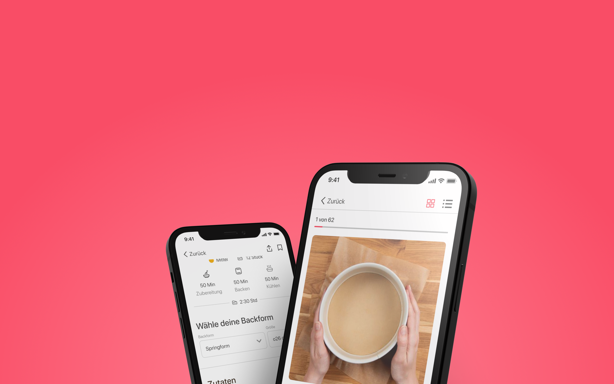
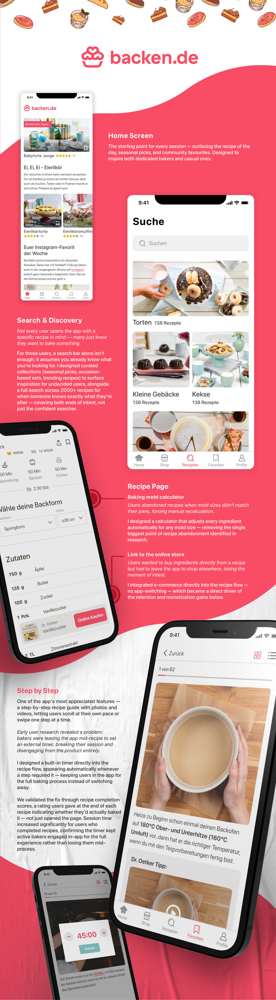

As lead designer on a team of three, interviews and usability tests surfaced a clear insight: users wanted utility over community — they came to bake, not socialize. That reprioritized the roadmap: step-by-step guidance, a baking mold calculator, and an integrated shop replaced planned social features. Every feature was tested and validated before development.
People bake for all kinds of reasons. Our most dedicated users treat baking as a serious hobby — experimenting with new recipes, perfecting their techniques, and sharing their creations on social media, often tagging baken.de for recognition and friendly competition. Others turn to baking for inspiration, especially around seasonal events, holidays, or special occasions, where every recipe is an opportunity to delight friends and family. No matter the skill level or the occasion, our app offers the right recipes, guidance, and tools to make baking enjoyable and accessible for everyone.

70%
Mobile Adoption
Social login, mobile-first
12%
Increase in Google Play Installs
App store listing redesign
E-Commerce Launched
Launched → retention + monetisation
15%
Increase in Sign-Ups
Driven by social login